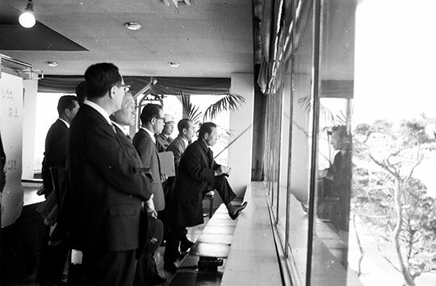
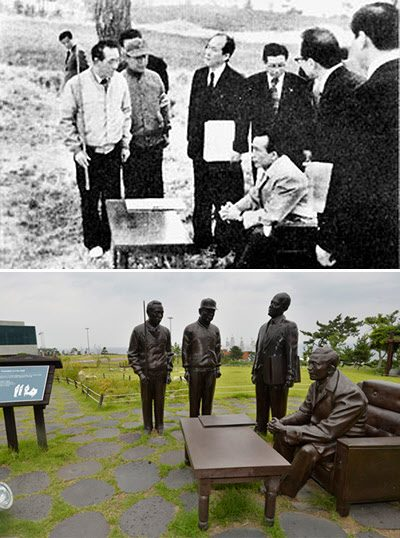
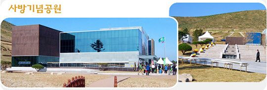

연재일 2014-09-15출처 조선일보 프리미엄조선 연재
1960년대, 한국 야산들은 가난한 국민에게 땔감을 대는 고마운 창고였다. 겨울에는 더욱 그랬다. 삭정이도 솔방울도 낙엽도 귀중한 ‘가정 연료’였다. 농한기에 시골의 가장(家長)들은 장작을 패서 달구지에 싣고 장터로 나가기도 했다. 야산의 나무들도 수난시대였다.
그러한 악조건에서 맨 먼저 ‘가정 연료’의 대전환을 이루지 못하면 국토녹화의 대망은 공염불로 돌아갈 수밖에 없었다. 민둥산을 푸르게 가꾸려면 나무를 많이 심어야 한다. 아무리 심어봤자 땔감으로 써버리면 헛수고다. 그렇다면 나무를 대신할 연료정책부터 바로 세워야 한다. 그것을 실현하지 못하는 정부가 ‘산에 가서 나무 베는 사람은 엄벌에 처한다’고 외쳐댄다면? 이건 공포조성에 의한 억압정치에 불과하다.
‘국토녹화와 대체연료’의 함수관계를 박정희는 명백히 인식하고 있었다. 박태준도 그 해법을 고민하고 있었다. 어떻게 풀어낼 것인가? 마침 국립지질광물연구소에 용기와 지혜를 겸비한 한 인물이 있었다. 막 책임자가 된 이정환이었다. 그의 목소리를 직접 들어보는 것이 좋겠다. 이정환은 1984년 10월 19일 《한국경제신문》에 다음과 같은 증언을 남겼다.
<5‧16혁명 직후 산업 관련 기관은 모두 제1차 경제개발5개년계획을 추진하는 것과 함께 활발한 업무활동을 시작했으나 지질연구 사업만은 ‘계획사업’으로 인정받지 못해 국립지질광물연구소는 더욱 유명무실(有名無實)한 기관으로 취급되어 전 직원은 사기가 땅에 떨어지고 허탈감에 빠져 있었다.
이러한 상황에서 1962년 1월 5일자로 동 연구소장 서리에 임명된 나는 어떻게든 지하광물자원을 경제개발5개년계획에 포함시키기 위한 묘안을 짜내기 위해 부심했다. 결론적으로 ‘산림녹화를 위해서는 국내 자원을 개발해야 한다. 무연탄을 쓰면 자원도 되고 산림녹화도 된다’는 취지의 캐치프레이즈를 내걸기로 하고 밤을 새워가면서 상부기관에 보고할 브리핑 자료를 마련했다.>
박태준은 상공담당 최고위원으로서 산하기관인 국립광물지질연구소의 연두업무 보고를 받았다. 박태준과 이정환, 둘은 말 그대로 초면이었다. 이정환의 증언을 더 들어보자.
<나는 초면인 박태준 최고위원 앞에서 1시간 30분에 걸쳐 당시 3000만 톤에 불과했던 무연탄 매장 발견량을 15억 톤으로 늘릴 수 있으니 이를 위해 연구소 인원을 25명에서 220명으로 늘리고 연간 3억 원씩 5년간 15억 원의 예산을 투입해줄 것을 건의했다. 그러나 박 위원의 반응은 의외로 무표정했고 가부(可否)의 말이 없이 그냥 돌아가 있으라고만 하기에 광물자원 개발에는 그다지 관심이 없는 사람으로 생각하고 낙담한 채 돌아왔다.>
그런데 어떻게 되었을까? 박태준은 이미 그 훌륭한 계획을 실현할 수 있는 최적 방안을 궁리하고 있었다. 이정환의 증언이 이어진다.
<이틀 후 예고도 없이 박 위원이 박정희 최고회의 의장을 모시고 남영동 소재 연구소를 직접 방문해 “지난번 보고한 내용을 자세하게, 그리고 소신껏 박 의장께 보고 드리라”고 일러주었다. 그 자리의 참석자들은 모두 군 장성급들이었고 공무원복 차림은 나를 포함한 두 명뿐이어서 긴장감이 더했다.
열과 성을 다한 설명 및 건의가 끝난 뒤 박 의장은 이 사업의 중요성을 실감하고 그 자리에서 연구소 정원을 나의 건의대로 220명으로 대폭 늘리고 연간 예산도 전년의 2000만 원에서 15배로 늘려 3억 원으로 늘리도록 관계 장관에게 지시했다. 기존 기관의 인원 및 예산이 이런 정도로 크게 확대된 것은 유례가 없는 일이었던 만큼 다른 기관들의 부러움도 대단했던 것으로 기억된다.>
이정환의 증언에서도 박태준의 일하는 방식과 ‘박정희의 박태준에 대한 신뢰’를 엿볼 수 있다. 이미 짜놓은 박정희의 빡빡한 연두 순시 스케줄 속에다 느닷없이 일개 연구소 직접 방문을 끼워 넣은 박태준, 박태준의 건의를 듣고 국가정책의 중대 사안이란 점을 대뜸 간파한 박정희. 이것이 한국 녹색혁명 대장정에서 보이지 않는 출발선을 창조하게 되었는데, 이정환은 이렇게 증언을 마무리한다.
<박 의장의 순시를 계기로 그때까지 부진했던 지질조사 및 광물개발 사업은 본궤도에 오르게 됐고, 1차 5개년계획이 끝날 무렵에 우리나라 가용 무연탄 매장량은 1962년 초의 3000만 톤에서 16억 톤으로 무려 50배가 넘게 확보할 수 있게 되었다.
이에 따라 대단위 탄좌회사가 국책으로 설립됨으로써 오늘에 이르기까지 무연탄이 중요한 에너지 자원으로 쓰여 온 것이다. 이러한 배후에는 당시 박태준 최고위원의 지하자원 개발사업에 대한 남다른 관심과 이해가 숨겨져 있었다.>
대규모 무연탄 개발을 근거로 삼아 전국 각처에 연탄공장이 탄생했다. 십구공탄. 서민의 온갖 애환을 태우는 19개의 조그만 불구멍. 1970년대에도 연탄을 싣고 가는 달동네의 리어카는 빈곤과 소외의 상징이었고, 연탄가스 중독 사고들이 이웃들의 가슴을 아프게 했다.
그런 쓰라린 사연을 뒤로하고 벌거숭이 붉은 산들은 박정희의 ‘치산녹화 7개년 계획(1965-1971)’과 ‘수계별 산림복구 종합계획(1967-1976)’이 지칠 줄 모르고 심어주는 묘목들을 받아 마치 잃었던 아이들을 되찾은 어미처럼 키워내면서 이 땅의 녹색혁명을 향하여 푸르게 푸르게 우거져갔다.
여든 살을 바라보는 생의 황혼기에 박태준은 까마득한 옛일을 이렇게 추억했다.
“그때 이정환 소장의 브리핑을 듣는 순간에 사실은 가슴이 찌르르 했소. 지음(知音)을 만난 것 같았지. 그런데 함부로 무슨 약속을 해줄 수 있나? 이건 반드시 각하의 결심부터 받아야 한다, 그래야 예산도 인력도 계획대로 된다, 이 생각부터 했지. 그래서 그 사람은 나에 대해 무뚝뚝한 군인이라는 첫인상을 받았던 모양이오….
70년대 들어서는 포항에도 사방(砂防)사업이 굉장하게 벌어졌는데, 그때 내가 포항에 박혀 있지 않았소? 71년 가을이었을 거요. 각하가 포철을 방문한 걸음에 나한테 포항 사방사업 얘기를 꺼내셨어. 그때 그 말씀이 나에게는 은근히 기합을 넣는 것처럼 들리기도 했소(웃음).”
박정희가 포항제철 건설 현장을 순시한 그때는 1971년 9월 2일로, 1968년 11월 12일의 포철 첫 방문 후 벌써 다섯 번째 방문이었다. 그날 박정희는 박태준에게 새삼 국토녹화 의지를 드러냈다.

“그게 언제였나? 임자가 무연탄 개발 하자고 나를 광물연구소로 데려갔잖아?”
“62년 연두순시 때였습니다.”
“그때 우리가 잘 해치웠어. 그런데 말이야, 일본이나 갔다가 비행기를 타고 돌아올 때면 영일만 저쪽을 지나게 되는데, 우리 국토의 초입부터가 벌겋게 벌거숭이야. 아주 보기 싫어. 영일에 대대적인 사방공사를 해야 하는데, 임자에게 여유가 있으면 좋겠어.”
“각하, 현 상태에서는 아무리 좋은 사업이어도 제가 다른 데 관심을 두게 되면 포철에 문제가 생기게 됩니다.”
“그렇다는 거야. 산림청장이 중요한데…. 불원간 모범 새마을을 보러 영일 기계로 한 번 더 내려올 거야.”
박정희는 박태준에게 귀띔했던 언질을 그로부터 보름쯤 지나서 실행한다. 1971년 9월 17일 영일군(현 포항시) 기계면 문성리 방문. 한국 새마을운동의 모범적 효시 사례로 꼽히는 마을이다. 이때도 박정희는 박태준을 비롯한 몇 사람에게 영일지역 사방공사에 대한 의지를 표명했다고 한다. 그것이 5개년 계획의 국가 정책으로 시행된 것은 1973년이었다. 전국 최대 규모의 영일사방사업.
나무를 심고 가꾸기에는 까다로운 환경이었다. 특히 지질이 문제였다. 영일만 해안지역 야산들은 표층이 이암(포항사람들은 ‘떡돌’이라 부름)이어서 석재나 콘크리트로 층층 축대를 쌓아 나무 심을 자리부터 확보하고 묘목이 뿌리를 내릴 수 있게 흙을 갈아줘야 했다. 강한 해풍도 골칫거리였다. 일차로 곰솔(해송), 오리나무를 심어야 했다.
박정희가 갓 마흔을 넘은 손수익 경기지사를 산림청장으로 발탁한 것은 1973년 1월이고 농림부 소속이던 산림청을 내무부 소속으로 바꾼 것은 그해 3월이었다. 믿음직스런 지휘자가 촘촘한 행정망을 잘 활용할 수 있도록 해준 조치였다. 5년 8개월간 산림청장에 재임하며 ‘명 산림청장’이란 평을 받았던 손수익은 대통령이 각별히 관심을 기울인 영일사방사업도 훌륭하게 이끌어갔다.
박정희가 영일사방사업 현장인 포항시 흥해읍 오도리(영일만 해안의 북쪽 끝머리)를 방문한 것은 1975년 4월 17일. 하루 전에는 대구시에서 연두순시 보고를 받았다. 대통령의 오도리 현장방문은 애초에 전용 헬기를 이용하는 것으로 잡혀 있었다. 그러나 진눈깨비가 내려서 승용차로 포항까지 내려왔다. 문제는 포항 시내에서 오도리까지 가는 30리 길이었다. 아직 도로가 제대로 개설되지 않은데다가 눈비가 내려 진흙탕이었다. 경호실과 비서실이 반대했다. 그러나 대통령의 의지는 강했다.

유일한 이동수단은 사륜구동의 강력한 지프였다. 박태준이 기상 상태를 보고 미리 대기시켜둔 포항제철 지프들을 출동시켰다. 지프들은 울퉁불퉁한 산길을 한 시간이나 달렸다. 그날따라 오도리에는 해풍마저 세차게 불고 있었다. 현장에서 기다리고 있던 김수학 경북지사, 박상현 경상북도 산림국장, 조성완 사방사업소장이 험한 산길과 궂은 날씨를 마다하지 않은 대통령에게 브리핑을 했다. 결론은 힘찬 다짐이었다.
“각하, 바로 옆에 수령 100년이나 되는 소나무가 자라고 있습니다. 이곳이 비록 풀이 자랄 수 없을 정도로 메마르고 척박한 땅입니다만, 기필코 저 소나무와 같이 울창한 산림으로 조성하겠습니다.”
2007년은 이 땅에서 사방사업이 시작된 지 100년이 되는 해였다. 사방사업 100년을 기념하는 ‘사방기념공원’이 한국 최초로 그해 10월 포항시 흥해읍 오도리에 건립되었다. 1973년부터 1977년까지 그때 예산 38억3000여만 원을 들여서 연인원 360여만 명이 황폐한 야산 4538ha를 푸르게 가꾼 녹색혁명의 롤 모델이 아담하고 체계적인 교육장으로 태어난 것이다.
전시관을 한 바퀴 돌고 나면 사방의 정의, 목적, 종류, 역사, 한국의 치산녹화 과정 등을 알게 된다. 동해를 내려다보는 산비탈에 디오라마로 재현한 사방작업 모습들도 추억의 볼거리다. 길게 이어진 산책로에는 사람의 발길이 끊이지 않는다.
포항 사방기념공원은 풍광이 아름답다. 고요한 저물 무렵, 까치놀에 물드는 동해 바다를 내려다볼 때는 지친 마음에도 저절로 잔잔한 금빛 물살이 일어난다. 올해 식목일까지, 이 사방기념공원을 다녀간 관광객은 일본, 중국, 몽골, 인도네시아, 아프리카 등 외국인을 포함해 50만 명을 헤아린다. 아시아, 아프리카의 개도국에서 코이카 새마을 연수 프로그램으로 방한한 공무원이나 연구원이 종종 여기에 공부를 하러 온다.
13분짜리 영상물 방영이 끝나는 순간, 그들은 하나같이 박수를 치며 이구동성으로 외친다. “Amazing! Great!” 이 경외의 외침, 이것이 한국 녹색혁명의 본성이다.
